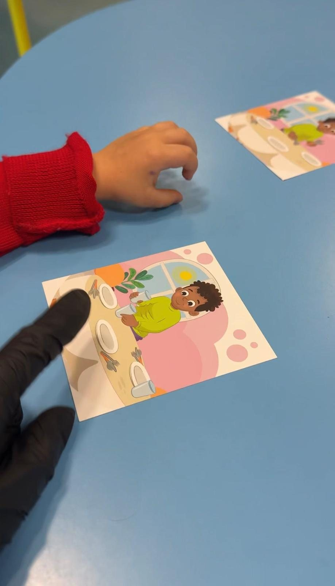
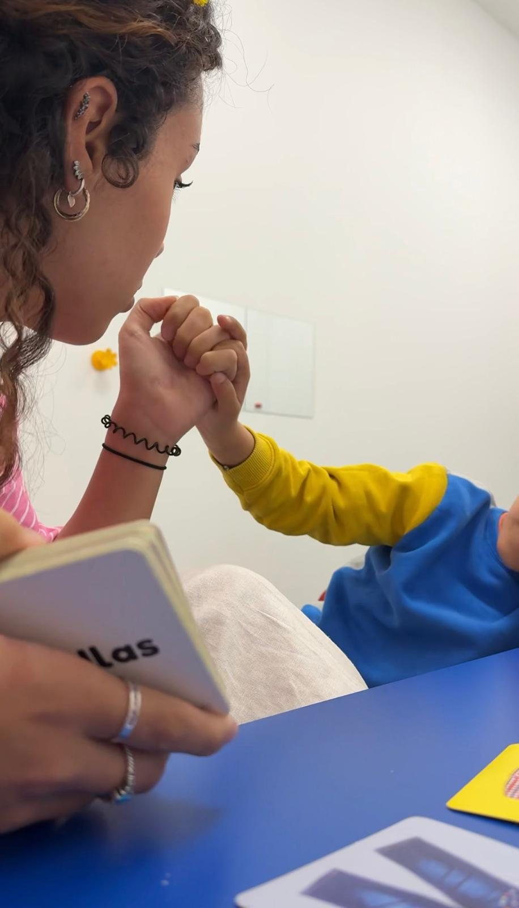
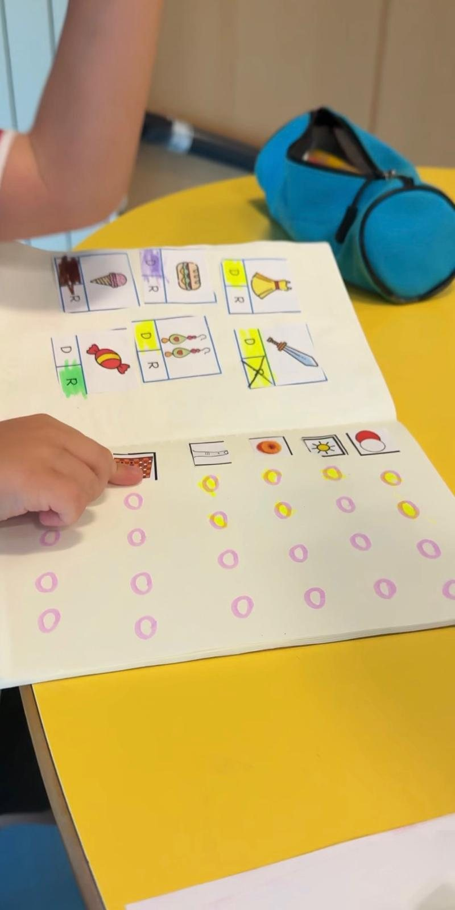

Servicios
Qué trabajamos en consulta
Así son las sesiones, paso a paso
Servicios
Logopedia y atención temprana a domicilio
Logopedia infantojuvenil
A domicilio en Arganda del Rey, La Poveda, Rivas Vaciamadrid, Velilla de San Antonio y Mejorada del Campo
- Deglución atípica / terapia miofuncional
- Articulación y trastornos del sonido del habla
- Retraso del lenguaje
- Trastornos del aprendizaje (lectoescritura)
- Trastorno del desarrollo del lenguaje (TDL)
- TEA — perfil pragmático y lingüístico
Atención temprana
A domicilio, de 0 a 6 años, junto a la familia
Cuanto antes se acompañe el desarrollo, más fácil resulta. Trabajamos en casa, en el entorno del niño o la niña, y damos pautas sencillas a la familia para continuar entre sesiones.
- Estimulación del lenguaje y la comunicación
- Primeras palabras y comprensión
- Alimentación y deglución
- Orientación y pautas a las familias
- Coordinación con la escuela infantil
Neurorrehabilitación
Logopedia neurológica en adultos
Intervención en alteraciones del lenguaje y el habla de origen neurológico, con un enfoque de neurorrehabilitación.
- Afasias
- Disartrias
- Otras alteraciones del lenguaje y el habla de origen neurológico
Valoración y tarifas a consultar directamente conmigo.
Primera valoración
Hasta 45 minutos, sin compromiso
Para empezar, nos conocemos y valoramos juntos qué necesita tu hijo o hija. Si tienes un informe del colegio con las dificultades observadas, puedes traerlo; nos ayuda a orientar mejor la intervención.
Pedir primera valoración
Material visual adaptado a cada caso
Acompañamiento cercano en cada sesión
Seguimiento y registro del progreso¿No sabes si conviene consultar? Mira las señales más habituales aquí.
Tarifas
Evaluación logopédica a domicilio
Pensadas para casos complejos aún no valorados, cuando se necesita un informe detallado para el neuropediatra, el colegio, una beca u otro trámite. Cada pack incluye el informe clínico correspondiente; el tiempo y la tarifa finales dependen de la complejidad del caso.
| Área | Incluye | Duración | Tarifa |
|---|---|---|---|
| Deglución / terapia miofuncional |
|
45 min | 80 – 90 € |
| Articulación / TSH |
|
45 min | 80 – 90 € |
| Retraso del lenguaje |
|
1 hora | 150 – 160 € |
| Trastornos del aprendizaje |
|
1,5 – 2 h | 180 – 200 € |
| Trastorno del desarrollo del lenguaje |
|
2 horas | 200 – 240 € |
| TEA — perfil comunicativo |
|
2 horas | 220 – 250 € |
Las tarifas de logopedia en adultos se consultan de forma individual.
Tarifas
Intervención a domicilio · curso 2026–2027
Sesiones periódicas de seguimiento en casa, dentro de Arganda del Rey y alrededores. Se empieza con una primera valoración de hasta 45 minutos, sin compromiso. Si dispones del informe del colegio con las dificultades observadas, puedes aportarlo para orientar mejor la intervención.
¿Buscas la colaboración con colegios y escuelas infantiles? Consulta las tarifas aquí.
¿Hablamos de tu caso?
Pedir cita